| Albers equal-area conic | Equidistant conic | Lambert conformal conic | (American) polyconic |
|---|---|---|---|
[ ]Albers conic equal-area projection ]Albers conic equal-area projection | [ ]Equidistant conic ]Equidistant conic | [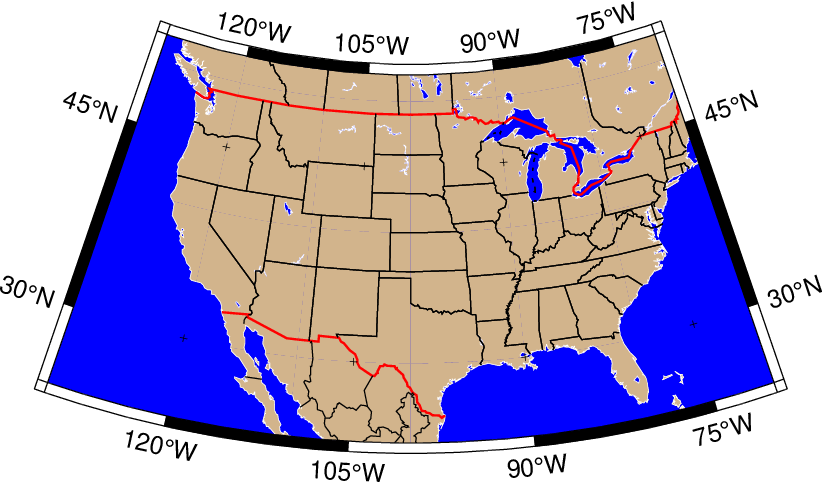]Lambert conic conformal | [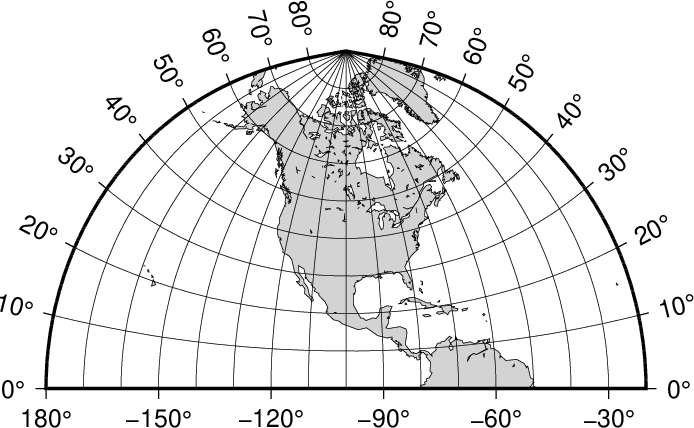](American) polyconic projection |
| Lambert Azimuthal Equal-Area (rect) | Lambert Azimuthal Equal-Area (hemi) | Polar Stereographic | Rectangular stereographic |
|---|---|---|---|
| [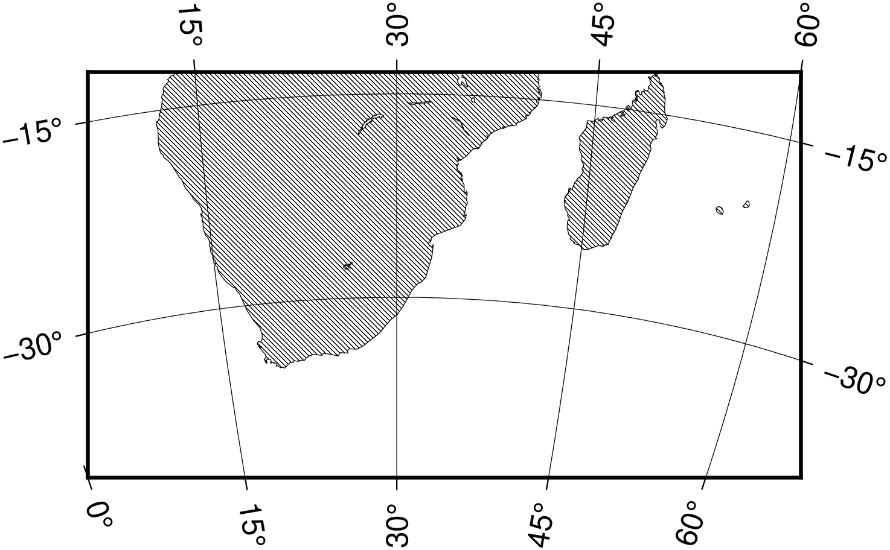]Rectangular map | [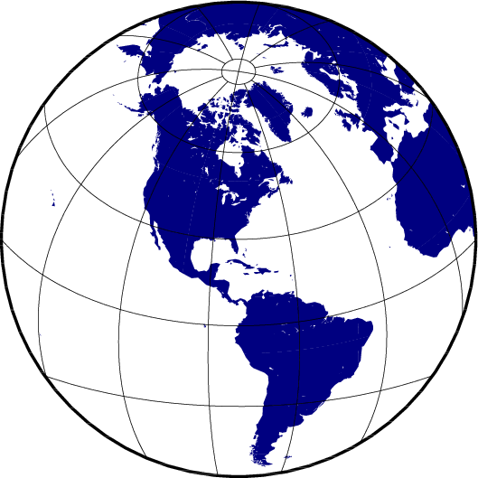]Hemisphere map | [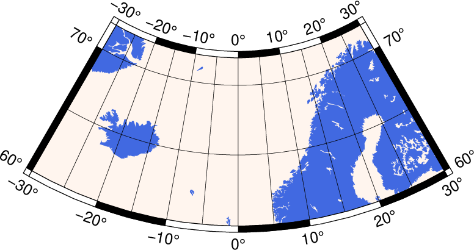]Polar Stereographic Map | [ ]Rectangular stereographic map ]Rectangular stereographic map |
| Perspective | Orthographic | Lambert conformal conic | Gnomonic |
|---|---|---|---|
[ ]Perspective ]Perspective | []Orthographic | [ ]Azimuthal Equidistant ]Azimuthal Equidistant | [ ]Gnomonic ]Gnomonic |
| Mercator | Transverse Mercator | Oblique Mercator | Cassini |
|---|---|---|---|
| [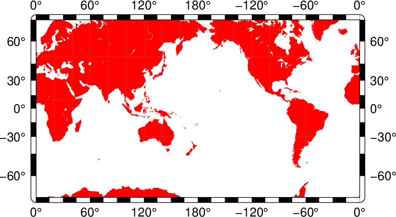]Mercator | [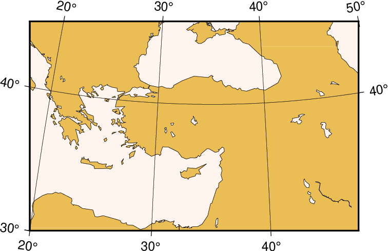]Transverse Mercator | [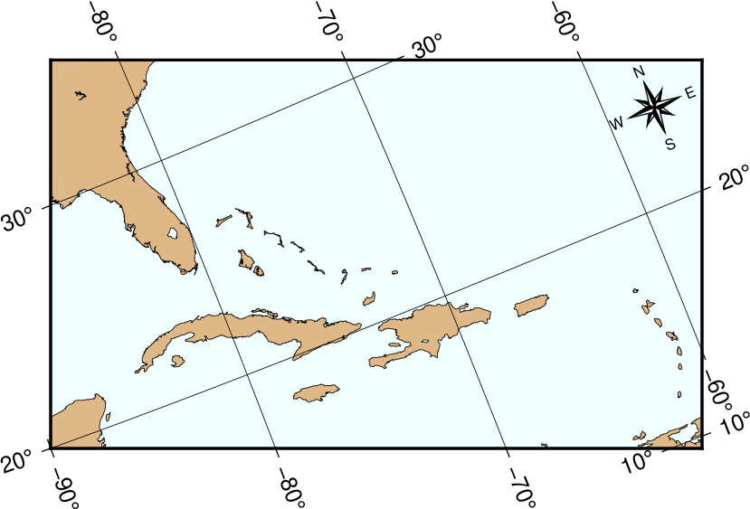]Oblique Mercator | [ ]Cassini cylindrical ]Cassini cylindrical |
| Cylindrical equidistant | Cylindrical equal-area | Miller Cylindrical | Cylindrical stereographic |
|---|---|---|---|
[ ]Cylindrical equidistant ]Cylindrical equidistant | []Cylindrical equal-area | [ ]Miller Cylindrical ]Miller Cylindrical | [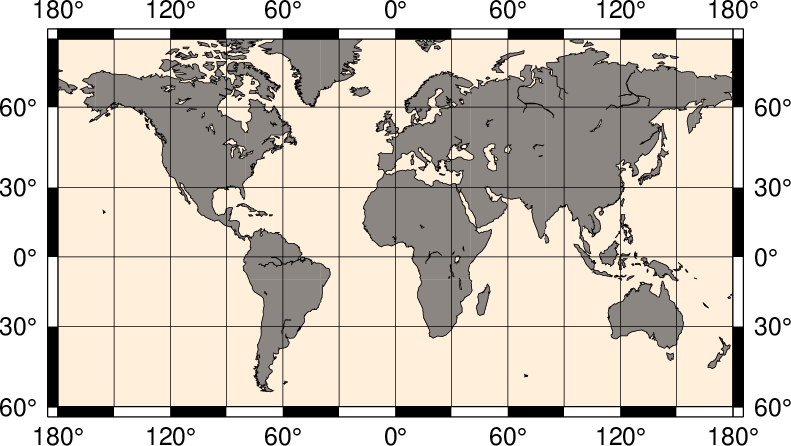]Cylindrical stereographic |
| Hammer | Mollweide | Winkel Tripel | Robinson |
|---|---|---|---|
| [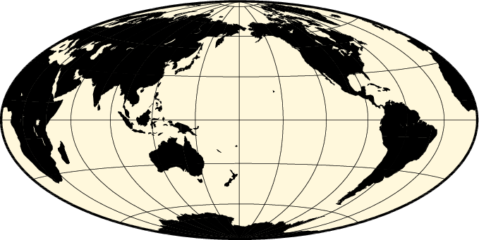]Hammer | [ ]Mollweide ]Mollweide | [ ]Winkel Tripel ]Winkel Tripel | [ ]Robinson ]Robinson |
| Eckert IV | Sinusoidal | Sinusoidal int | Van der Grinten |
|---|---|---|---|
| [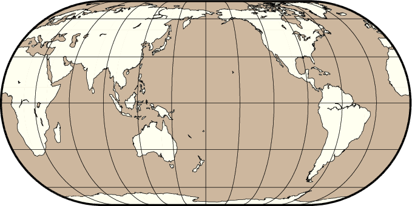]Eckert IV and VI | [ ]Sinusoidal ]Sinusoidal | [ ]Sinusoidal ]Sinusoidal | []Van der Grinten |